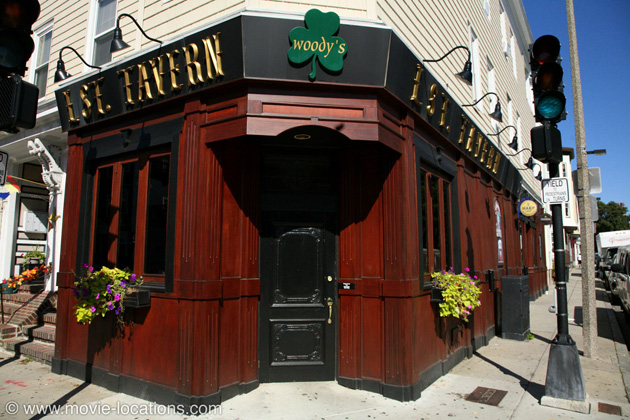
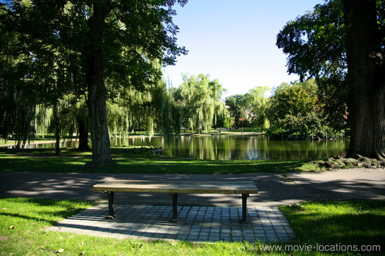

Good Will Hunting
Main Content

If you’re struggling actors who can’t get good roles, why not write your own script, with a peach of a central role? You might just pick up a screenplay Oscar on the side. You wouldn’t believe it in the movies.
Matt Damon and Ben Affleck took their script to Kevin Smith, who’d directed Affleck in Chasing Amy, and who passed on directing, but produced the movie, with Gus Van Sant in the director’s chair. The rest, as they say, is history.
The film is set around South Boston and Harvard Square and, although the publicity made great play of the Massachusetts locales (Boston is the hometown of both Damon and Affleck), financial concerns dictated that much of the movie was actually made in Toronto.
Real Boston locations include the college, where stubbornly underachieving genius Will Hunting (Damon) works as janitor, which is Massachusetts Institute of Technology, Cambridge – the exterior is MIT’s McLaurin Building.
The college of gruff shrink Sean Maguire (Robin Williams) is the Bunker Hill Community College, Rutherford Avenue, Charlestown, while the college room of Skylar (Minnie Driver) is over the Charles River, Dunster House, Harvard University, Cambridge.
Harvard Square is the site of Au Bon Pain, 27 Brattle Street, where Will Hunting tries to explain his gift to Skylar, and also the now closed Tasty Café, where the two share a very messy pickle.
Off Massachusetts Avenue was Harvard student hangout the Bow and Arrow Pub, now gone. But still serving up drinks is the working class bar where Will hangs out with Chuckie Sullivan (Ben Affleck) and his buddies is the L Street Tavern, 658 East Eighth Street A, Charles Baldwin Square at L Street. Helpfully, there's a sign on the wall outside, proudly announcing the bar as a location in the Oscar-winning movie. The exterior has had a bit of a makeover since 1997.

The park, to which Maguire takes Will for a heart-to-heart, is Boston Public Garden, Arlington Street, southwest of downtown. The bench is still there – just follow the lakeside path north from the western end of the bridge. It’s the third you’ll come across.
North of the border in Canada, the University of Toronto supplied many of the film’s interiors: Knox College; Whitney Hall; St Michael’s College and McLennan Hall; while the Central Technical High School was also used. Dorm interiors were filmed at Wycliffe College, Hoskins Avenue.
In downtown Toronto are the Ontario Specialty Co, 133 Church Street at Queen Street, the toy store where Will demonstrates his magic trick to Skylar. The shop is transformed into a beauty parlour for the fake newsreel shots in Oscar-winning musical Chicago (which was filmed entirely in Toronto).
And the Crown Life Building, 120 Bloor Street East becomes the glossy corporate environment he rejects.
The interior of the college bar, where Will Hunting humiliates the history student, is the Upfront Bar and Grill, 106 Front Street East, downtown Toronto.
Visit Info
Visit The Film Locations
Massachusetts | Boston
Visit: Massachusetts
Visit: Boston
Flights: Logan International Airport, 1 Harborside Drive, Boston, MA 02128 (tel: 800.235.6426)
Travel around: MBTA (Massachusetts Bay Transportation Authority)
Ontario | Toronto
Visit: Ontario
Visit: Toronto
Flights: Toronto Pearson International Airport, 6301 Silver Dart Drive, Mississauga, ON L5P 1B2 (tel: 416.247.7678)